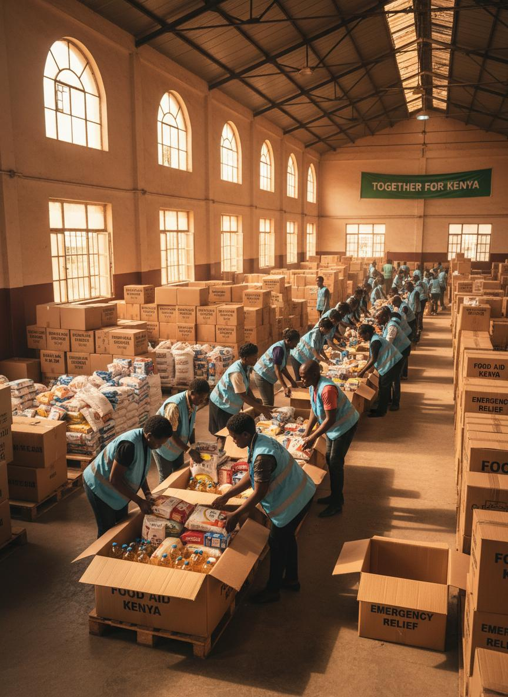
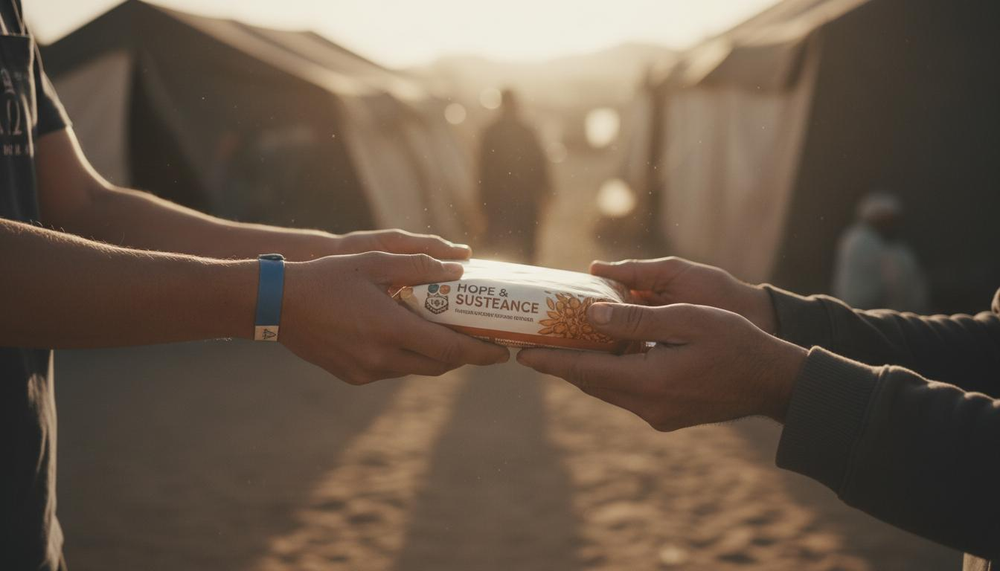

Humanitarian relief.
Community empowerment. Sustainable impact.
We work with vulnerable communities in Kenya—providing food, restoring dignity, and building resilient livelihoods.



Relief, dignity, and long-term resilience.
We combine immediate assistance with programs that help communities rebuild—fairly, transparently, and together.
Food Security & Hunger Alleviation
Nutritious meals and dry food distributions during Ramadhan, Eid, and crises.
Social Welfare & Relief
Direct support for widows, orphans, and families facing hardship.
Livelihood & Empowerment
Skills, tools, and small-business support for lasting independence.
Founded in 2021, rooted in the community.
Anwaar Foundation is a Kenyan nonprofit delivering humanitarian relief and sustainable development. We prioritize dignity, inclusion, and measurable outcomes.
Our name means light—reflecting the hope we bring to vulnerable households across Nairobi and Tana River.
Vision
A society where every individual enjoys equal opportunities and lives with dignity.
Mission
To empower vulnerable communities through education, healthcare, hunger alleviation, and sustainable livelihood programs.

The principles that guide our work
Compassion
We serve with empathy, humanity, respect, and sincerity.
Integrity
We uphold honesty, transparency, and ethical conduct.
Community-Centered
We design interventions based on real community needs.
Equity & Inclusion
We serve without discrimination, preserving dignity for all.
Excellence
We deliver high-quality, impactful humanitarian services.
Responsibility
We steward resources entrusted to us with accountability.
Seasonal relief. Year-round support.
 Ramadhan
Ramadhan
Ramadhan Cooked Meals
Daily iftar distribution in informal settlements, providing nutritious meals to fasting families.
View program details Eid Celebrations
Eid Celebrations
Eid-ul-Fitr & Eid-ul-Adha
Festive meals and meat distribution for families and children's homes during Eid celebrations.
View program details Year-round
Year-round
Dry Food & Livelihoods
Essential supplies in remote areas plus self-sufficiency projects for long-term resilience.
View program detailsReal reach. Real households.
Since 2021, we've served thousands of vulnerable individuals across Kenya with dignity and compassion.

Dignity in every delivery.



We work with trusted partners.
Collaboration strengthens our impact. We partner with organizations that share our commitment to dignity and transparency.
Iqra Foundation
International partner and funding support
Lamu Bites Restaurant
Food preparation support for meal programs
Community Leaders & Volunteers
Local coordination and beneficiary identification

Your support feeds families.
100% of public donations go to program delivery. Monthly giving helps us plan ahead and reach more communities in need.
Secure payment processing. Your contribution brings hope, food, and dignity to vulnerable communities.
Light, relief, and lasting change - delivered with dignity.
Join the mission today by giving, volunteering, or partnering with us to expand support for vulnerable families.